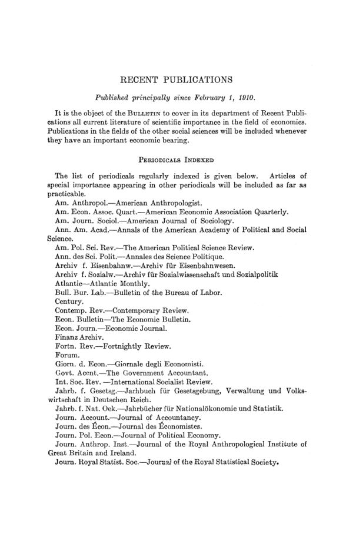

O Bulletin de junho de 1910: Walras, Giffen e Sumner
Leitura: 4 min
Os obituários de Léon Walras, Robert Giffen, William Graham Sumner e George M. Fisk, e 22 resenhas, de Adam Smith e o império ao socialismo britânico.


O número de junho de 1910 traz quatro obituários de economistas. Um deles, assinado por Henry Higgs, é o de Sir Robert Giffen, morto em 12 de abril aos 73 anos: chefe do departamento de estatística do Board of Trade e, antes, editor-assistente do Economist de Walter Bagehot.
Giffen gostava de repetir: “Nenhum de nós é mais sábio que Adam Smith”. (We are none of us wiser than Adam Smith)
Quem a profissão perdia?
Léon Walras, nascido em 1834, morreu em 4 de janeiro de 1910. Ensinara economia política em Lausanne desde 1870. A nota, assinada I. F., o coloca ao lado de Jevons na fundação da economia matemática moderna e lembra a descoberta independente e quase simultânea da utilidade marginal por Walras, Jevons e Menger.
Segundo a nota, Walras mostrou que havia, em cada caso, “tantas equações independentes quanto incógnitas”. (just as many independent equations as unknown quantities)
William Graham Sumner, de Yale, é lembrado em nota assinada A. T. H. A trajetória vai da defesa do padrão-ouro e do livre-comércio à história, com as vidas de Andrew Jackson, Alexander Hamilton e Robert Morris, e depois à sociologia, que ele preferia chamar de ciência da sociedade; Folkways saiu em 1907.
George Mygatt Fisk, ex-professor de comércio na Universidade de Illinois e estudioso das relações comerciais entre as grandes potências, morreu afogado em Madison, em 29 de abril; a nota é assinada M. H. R. Registram-se também as mortes de Émile Cheysson, de Karl Lueger, prefeito de Viena, e de Charles Sprague Smith, fundador do People's Institute de Nova York.
O que mais contavam as notas?
Frederick Jackson Turner trocava Wisconsin por Harvard. Paul S. Reinsch foi nomeado professor de intercâmbio Roosevelt na Universidade de Berlim para 1911–1912. Wesley C. Mitchell obteve licença para estudar a relação entre ciclos de negócios e flutuações de preços.
Em Illinois, o governador Deneen criou uma comissão tributária especial, com David Kinley e Charles E. Merriam entre os membros. Indianápolis e as universidades de Illinois e do Kansas abriram escritórios de referência municipal.
Que livros foram resenhados?
São 22 resenhas. F. W. Taussig abre a seção com A Project of Empire, de Nicholson, sobre as ideias de Adam Smith acerca das relações entre a Grã-Bretanha e suas colônias.
A história econômica americana tem peso. Katherine Coman resenha as Selections de G. S. Callender. Ernest L. Bogart resenha os volumes III e IV da Documentary History of American Industrial Society, sobre os processos por conspiração trabalhista de 1806 a 1842, e o livro de Emerson David Fite sobre o Norte durante a Guerra Civil.
Administração de empresas forma outro bloco: Harrington Emerson sobre eficiência, Carl C. Parsons, Galloway, Hotchkiss e Mavor e um manual de contabilidade. Em transportes, John Bauer resenha a história tarifária do sistema do Mississippi escrita por Frank Haigh Dixon, que resenha os volumes da Buffalo Historical Society sobre os canais de Nova York.
Frank A. Fetter resenha cinco obras britânicas contra o socialismo, e Walter E. Lagerquist, a tradução inglesa de Evolutionary Socialism, de Edward Bernstein. Fecham a seção imigração chinesa, mulheres na indústria, sistema penitenciário, origens sociais, eugenia e ética social.
Como se organizava a bibliografia?
A seção Recent Publications reúne obras publicadas principalmente desde 1º de fevereiro de 1910, precedida da lista de periódicos indexados.
Na minha leitura
Na minha leitura, a nota sobre Walras é a peça de método do número. O critério que ela destaca, contar equações e incógnitas para saber se um sistema está determinado, é o ponto de partida do equilíbrio geral, embora a contagem, sozinha, não garanta que a solução exista nem que seja única.
O obituário de Giffen mostra o outro polo. Segundo Higgs, faltava a Giffen o instrumental matemático moderno, e sua força estava no juízo sobre os números e no faro para as armadilhas das séries. O sistema fechado e a medição cuidadosa seguiriam convivendo na disciplina.
Glossário
- Utilidade marginal
- utilidade do último incremento consumido de um bem; base da teoria do valor dos marginalistas.
- Determinação de um sistema
- condição em que o número de equações independentes é igual ao de incógnitas.
- Bimetalismo
- regime monetário com ouro e prata como padrão, a uma razão legal fixa.
Artigos desta edição
- Personal and Miscellaneous Notes — editores (pp. 131–144). Nomeações, prêmios, novos periódicos e escritórios de referência municipal, e obituários de George M. Fisk (M. H. R.), Robert Giffen (Henry Higgs), William Graham Sumner (A. T. H.) e Léon Walras (I. F.), este com lista das principais obras. JSTOR
- Nicholson, A Project of Empire: A Critical Study of the Economics of Empire, with Special Reference to the Ideas of Adam Smith — F. W. Taussig (pp. 145–147). Estudo das ideias de Adam Smith sobre as relações entre a Grã-Bretanha e suas colônias, incluindo seu plano de federação imperial. JSTOR
- G. S. Callender, Selections from the Economic History of the United States, 1765–1860 — Katherine Coman (pp. 147–148). Coletânea de textos de história econômica americana destinada a cursos universitários. JSTOR
- John R. Commons e Eugene A. Gilmore (orgs.), A Documentary History of American Industrial Society, vols. III e IV: Labor Conspiracy Cases, 1806–1842 — Ernest L. Bogart (pp. 149–151). Primeiros volumes da parte da coleção dedicada ao trabalho, com os documentos dos processos por conspiração contra trabalhadores organizados. JSTOR
- Emerson David Fite, Social and Industrial Conditions in the North during the Civil War — Ernest L. Bogart (pp. 151–152). Estudo das condições econômicas e sociais do Norte dos Estados Unidos durante a Guerra Civil. JSTOR
- Office de Renseignements Agricoles, La Petite Propriété Rurale en France: Enquêtes Monographiques — James B. Morman (pp. 153–154). Inquérito iniciado em 1908 pelo ministério da agricultura francês sobre a situação dos pequenos proprietários rurais. JSTOR
- J. Frost, Agrarverfassung und Landwirtschaft in Belgien — James B. Morman (pp. 154–155). Descrição da agricultura belga publicada pela Sociedade Alemã de Agricultura. JSTOR
- Harrington Emerson, Efficiency as a Basis for Operation and Wages — Dexter S. Kimball (pp. 156–158). Reunião de ensaios publicados na Engineering Magazine sobre eficiência na gestão industrial e sua relação com os salários. JSTOR
- Frank Haigh Dixon, A Tariff History of the Mississippi River System — John Bauer (pp. 158–160). Relato das mudanças no transporte pelo Mississippi e seus afluentes, baseado sobretudo em dados de entidades comerciais das cidades ribeirinhas. JSTOR
- Henry Wayland Hill, An Historical Review of Waterways and Canal Construction in New York State; Canal Enlargement in New York State — Frank Haigh Dixon (pp. 160–162). Dois volumes da Buffalo Historical Society voltados à defesa da melhoria das hidrovias do estado de Nova York. JSTOR
- Lee Galloway, George Burton Hotchkiss e James Mavor, Organization, Correspondence, Transportation (Modern Business II) — Don C. Barrett (pp. 162–164). Segundo volume da série Modern Business, com partes sobre organização, correspondência comercial e transportes. JSTOR
- Carl C. Parsons, Business Administration — J. W. Jenks (pp. 164–165). Livro baseado em conferências do autor sobre os princípios de organização e os métodos de gestão de empresas. JSTOR
- Elisha Ely Garrison, Accounting Every Business Man Should Know — C. A. Mackenzie (pp. 165–166). Exposição dos princípios fundamentais e avançados da contabilidade para homens de negócios. JSTOR
- Erwin Steinitzer, Ökonomische Theorie der Aktiengesellschaft — M. B. Hammond (pp. 167–169). Monografia sobre a economia das sociedades anônimas, da origem da forma corporativa ao controle da administração pelos acionistas. JSTOR
- Boldt, Die Wertzuwachssteuer, ihre bisherige Gestaltung in der Praxis und ihre Bedeutung für die Steuerpolitik der Gemeinden — Carl C. Plehn (pp. 169–171). Estudo, por um comissário fiscal de Dortmund, do imposto sobre a valorização imobiliária adotado pelas cidades alemãs. JSTOR
- Mary Roberts Coolidge, Chinese Immigration — Ira B. Cross (pp. 172–174). História da imigração chinesa nos Estados Unidos, das campanhas contra ela e das leis de exclusão. JSTOR
- Edith Abbott, Women in Industry — John K. Towles (pp. 174–176). Estudo da história e das estatísticas do emprego feminino nos Estados Unidos, com nota introdutória de Sophonisba P. Breckinridge. JSTOR
- Frederick Howard Wines, Punishment and Reformation: A Study of the Penitentiary System — Willard C. Fisher (pp. 176–177). Nova edição de um estudo sobre o sistema penitenciário, acrescida de plantas antigas de prisões e de dois ensaios do autor. JSTOR
- G. E. Raines, The Case against Socialism e Present-Day Socialism and the Problem of the Unemployed; Towler, Socialism in Local Government; J. St. Loe Strachey, Problems and Perils of Socialism; John D. Mayne, The Triumph of Socialism and How It Succeeded — Frank A. Fetter (pp. 177–180). Cinco obras britânicas contra o socialismo, entre elas um manual para oradores e candidatos. JSTOR
- Edward Bernstein, Evolutionary Socialism: A Criticism and Affirmation — Walter E. Lagerquist (pp. 180–182). Tradução inglesa da obra do líder dos revisionistas alemães, na coleção Socialist Library. JSTOR
- William I. Thomas, Source Book for Social Origins — Ulysses G. Weatherly (pp. 182–184). Coletânea de materiais etnológicos, com bibliografias classificadas e anotadas, para a interpretação das sociedades primitivas. JSTOR
- Saleeby, Parenthood and Race Culture: An Outline of Eugenics — Charles A. Ellwood (pp. 184–186). Exposição popular dos princípios da eugenia, com apêndice bibliográfico. JSTOR
- Francis Greenwood Peabody, The Approach to the Social Question: An Introduction to Social Ethics — Isaac A. Loos (pp. 186–188). Introdução à ética social que discute os caminhos de aproximação à questão social. JSTOR
- Recent Publications (pp. 189–252). Bibliografia corrente, sobretudo de obras publicadas desde 1º de fevereiro de 1910, precedida da lista de periódicos indexados, com livros e artigos por seção temática. JSTOR
Fontes
- Personal and Miscellaneous Notes (pp. 131–144). JSTOR · Internet Archive (PDF)
- [untitled] The Economic Bulletin, (1910-06-01), pages 145-147 (pp. 145–147). JSTOR · Internet Archive (PDF)
- [untitled] The Economic Bulletin, (1910-06-01), pages 147-148 (pp. 147–148). JSTOR · Internet Archive (PDF)
- [untitled] The Economic Bulletin, (1910-06-01), pages 149-151 (pp. 149–151). JSTOR · Internet Archive (PDF)
- [untitled] The Economic Bulletin, (1910-06-01), pages 151-152 (pp. 151–152). JSTOR · Internet Archive (PDF)
- [untitled] The Economic Bulletin, (1910-06-01), pages 153-154 (pp. 153–154). JSTOR · Internet Archive (PDF)
- [untitled] The Economic Bulletin, (1910-06-01), pages 154-155 (pp. 154–155). JSTOR · Internet Archive (PDF)
- [untitled] The Economic Bulletin, (1910-06-01), pages 156-158 (pp. 156–158). JSTOR · Internet Archive (PDF)
- [untitled] The Economic Bulletin, (1910-06-01), pages 158-160 (pp. 158–160). JSTOR · Internet Archive (PDF)
- [untitled] The Economic Bulletin, (1910-06-01), pages 160-162 (pp. 160–162). JSTOR · Internet Archive (PDF)
- [untitled] The Economic Bulletin, (1910-06-01), pages 162-164 (pp. 162–164). JSTOR · Internet Archive (PDF)
- [untitled] The Economic Bulletin, (1910-06-01), pages 164-165 (pp. 164–165). JSTOR · Internet Archive (PDF)
- [untitled] The Economic Bulletin, (1910-06-01), pages 165-166 (pp. 165–166). JSTOR · Internet Archive (PDF)
- [untitled] The Economic Bulletin, (1910-06-01), pages 167-169 (pp. 167–169). JSTOR · Internet Archive (PDF)
- [untitled] The Economic Bulletin, (1910-06-01), pages 169-171 (pp. 169–171). JSTOR · Internet Archive (PDF)
- [untitled] The Economic Bulletin, (1910-06-01), pages 172-174 (pp. 172–174). JSTOR · Internet Archive (PDF)
- [untitled] The Economic Bulletin, (1910-06-01), pages 174-176 (pp. 174–176). JSTOR · Internet Archive (PDF)
- [untitled] The Economic Bulletin, (1910-06-01), pages 176-177 (pp. 176–177). JSTOR · Internet Archive (PDF)
- [untitled] The Economic Bulletin, (1910-06-01), pages 177-180 (pp. 177–180). JSTOR · Internet Archive (PDF)
- [untitled] The Economic Bulletin, (1910-06-01), pages 180-182 (pp. 180–182). JSTOR · Internet Archive (PDF)
- [untitled] The Economic Bulletin, (1910-06-01), pages 182-184 (pp. 182–184). JSTOR · Internet Archive (PDF)
- [untitled] The Economic Bulletin, (1910-06-01), pages 184-186 (pp. 184–186). JSTOR · Internet Archive (PDF)
- [untitled] The Economic Bulletin, (1910-06-01), pages 186-188 (pp. 186–188). JSTOR · Internet Archive (PDF)
- Recent Publications (pp. 189–252). JSTOR · Internet Archive (PDF)
- Sumário da edição no JSTOR: The Economic Bulletin, vol. 3, nº 2.
Documento em domínio público (EUA, publicado antes de 1931), via JSTOR Early Journal Content e Internet Archive. Resumo e comentário do autor deste site, sem afiliação com a American Economic Association. Encontrou um erro? Escreva: a correção é publicada no próprio texto, com data.
← Nº 106 · Manual de 1910: 1.360 sócios e a criação da American Economic Review Nº 108 · Field, 1910: sessenta anos de leis contra o trabalho infantil em Nova Jersey →